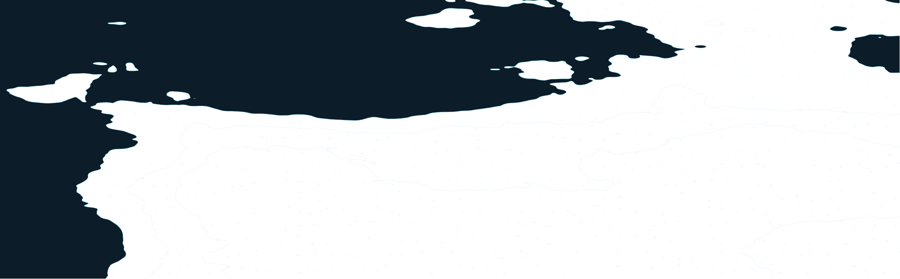

<!doctype html>
<html lang="en">
<head>
<meta charset="utf-8">
<title>Currents — App Store set</title>
<link rel="stylesheet" href="fonts.css">
<link rel="stylesheet" href="shared.css">
<style>
  /* Each frame is one 6.9" App Store slot (1320×2868). render.cjs captures
     the whole row; build.py slices it. */
  body { display: flex; width: max-content; }
  .f { position: relative; width: 1320px; height: 2868px; overflow: hidden; background: var(--ink); }
  .f .chart { position: absolute; top: 0; height: 100%; width: auto; opacity: .9; }
  .f .glow { position: absolute; inset: 0; background: radial-gradient(900px 1100px at var(--gx, 70%) 75%, rgba(26,140,242,.17), transparent 70%); }
  .kick { position: absolute; left: 96px; top: 150px; display: flex; align-items: center; gap: 22px;
    font: 600 30px/1 var(--mono); letter-spacing: .1em; text-transform: uppercase; color: var(--dim); }
  .kick b { color: var(--cyan); font-weight: 600; }
  .kick i { width: 70px; height: 2px; background: var(--dim); }
  h2 { position: absolute; left: 88px; right: 80px; top: 230px; margin: 0;
    font: 900 224px/.82 var(--display); text-transform: uppercase; color: var(--paper); letter-spacing: -.005em; }
  h2 span { color: var(--cyan); }
  .f .phone { width: 1000px; }
  .note { position: absolute; z-index: 9; font: 500 30px/1.4 var(--mono); color: var(--paper); }
  .note small { display: block; color: var(--dim); font-size: 24px; letter-spacing: .08em; text-transform: uppercase; }
  .note .y { color: var(--bite); }
  .dot { position: absolute; z-index: 9; width: 22px; height: 22px; border-radius: 50%; background: var(--bite); box-shadow: 0 0 0 8px rgba(255,210,63,.18); }
  .end { position: absolute; left: 96px; bottom: 110px; z-index: 9; }
</style>
</head>
<body>
<div id="row" style="display:flex"></div>
<template id="mark-def"><svg class="mark" viewBox="0 0 100 100"><use href="#mark"/></svg></template>
<svg width="0" height="0" style="position:absolute"><defs>
  <linearGradient id="g-ocean" x1="0" y1="0" x2="1" y2="1">
    <stop offset="0" stop-color="#1A8CF2"/><stop offset="1" stop-color="#26D1FA"/>
  </linearGradient>
  <g id="mark" fill="none" stroke="url(#g-ocean)" stroke-width="11" stroke-linecap="round" stroke-linejoin="round">
    <path d="M10,32 C24,13.3 36,50.7 50,32 C64,13.3 76,50.7 90,32"/>
    <path d="M10,52 C24,33.3 36,70.7 50,52 C64,33.3 76,70.7 90,52"/>
    <path d="M10,72 C24,53.3 36,90.7 50,72 C64,53.3 76,90.7 90,72"/>
  </g>
</defs></svg>
<script>
// shot: screenshot file; x/y/r: phone placement; chartX: which slice of the
// wide chart shows behind it, so the contours run continuously across the set.
const FRAMES = [
  { kick: 'Today', note2: 'works offline', title: 'The bite,<br><span>hour by hour.</span>',
    shot: '01_today.png', x: 210, y: 1020, r: -3, gx: '60%' },
  { kick: 'Log', note2: 'every catch', title: 'Every fish<br>remembers<br><span>the tide.</span>',
    shot: '06_catch.png', fallback: '03_catches.png', x: 250, y: 1200, r: 3, gx: '50%' },
  { kick: 'Catches', note2: '14 months', title: 'A logbook<br>that <span>fills<br>itself in.</span>',
    shot: '03_catches.png', x: 140, y: 1200, r: -2, gx: '40%' },
  { kick: 'Explore', note2: 'private by default', title: 'Your spots<br><span>stay yours.</span>',
    shot: '02_map.png', x: 260, y: 1020, r: 2.5, gx: '70%' },
  { kick: 'Stats', note2: 'what actually works', title: 'Know what<br><span>works.</span>',
    shot: '07_analytics.png', fallback: '04_fish.png', x: 170, y: 1020, r: -2.5, gx: '45%' },
  { kick: 'Field guide', note2: '1,568 species', title: 'Go catch<br><span>them all.</span>',
    shot: '04_fish.png', x: 240, y: 1020, r: 2, gx: '60%' },
  { kick: 'Crews', note2: 'friends only', title: 'Bragging,<br><span>but only to<br>your mates.</span>',
    shot: '09_leaderboard.png', fallback: '05_community.png', x: 160, y: 1200, r: -3, gx: '35%' },
];
const row = document.getElementById('row');
FRAMES.forEach((f, i) => {
  const el = document.createElement('section');
  el.className = 'f';
  el.style.setProperty('--gx', f.gx);
  el.innerHTML = `
    
    <div class="glow"></div>
    <div class="kick"><b>${String(i + 1).padStart(2, '0')}</b><i></i>${f.kick} · ${f.note2}</div>
    <h2>${f.title}</h2>
    <div class="phone" style="left:${f.x}px; top:${f.y}px; transform:rotate(${f.r}deg)">
      
    </div>`;
  row.appendChild(el);
});
</script>
</body>
</html>
